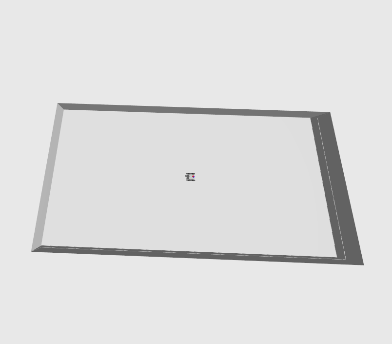
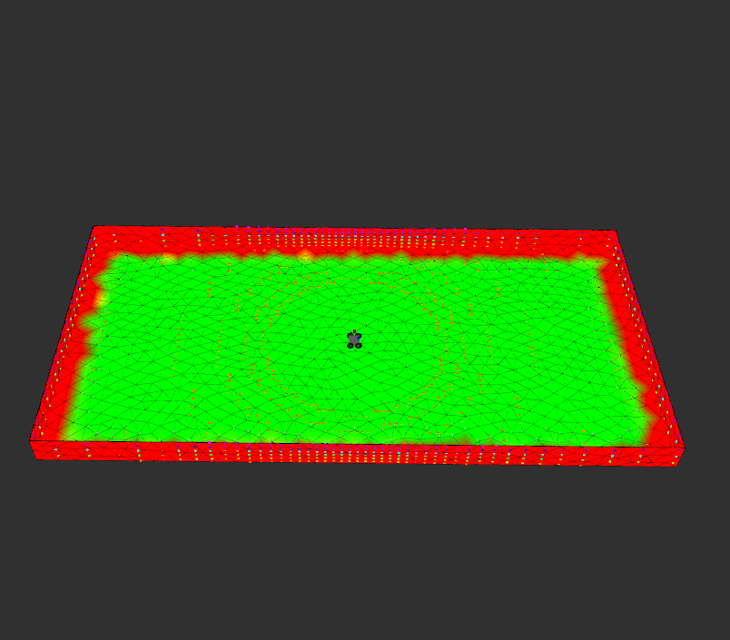
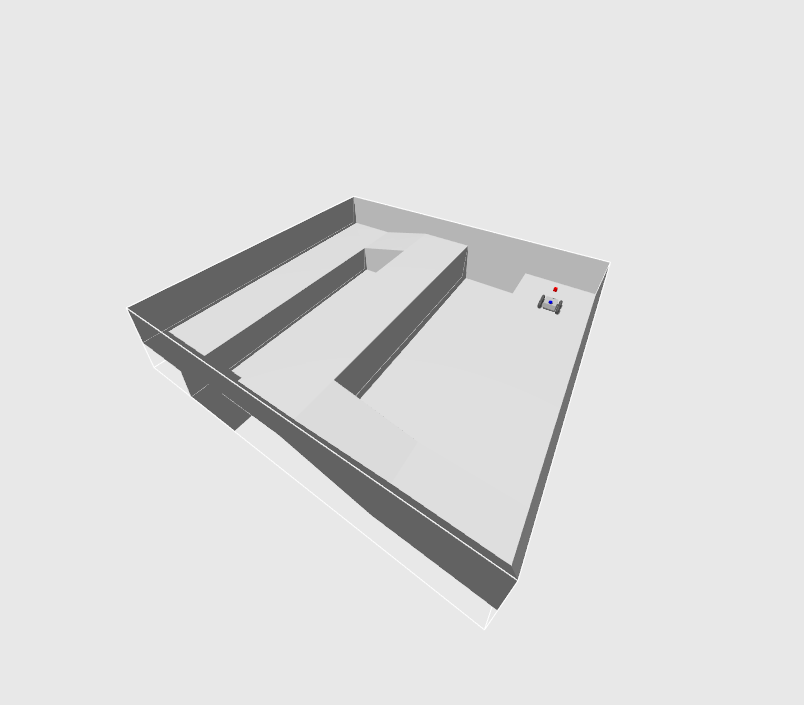
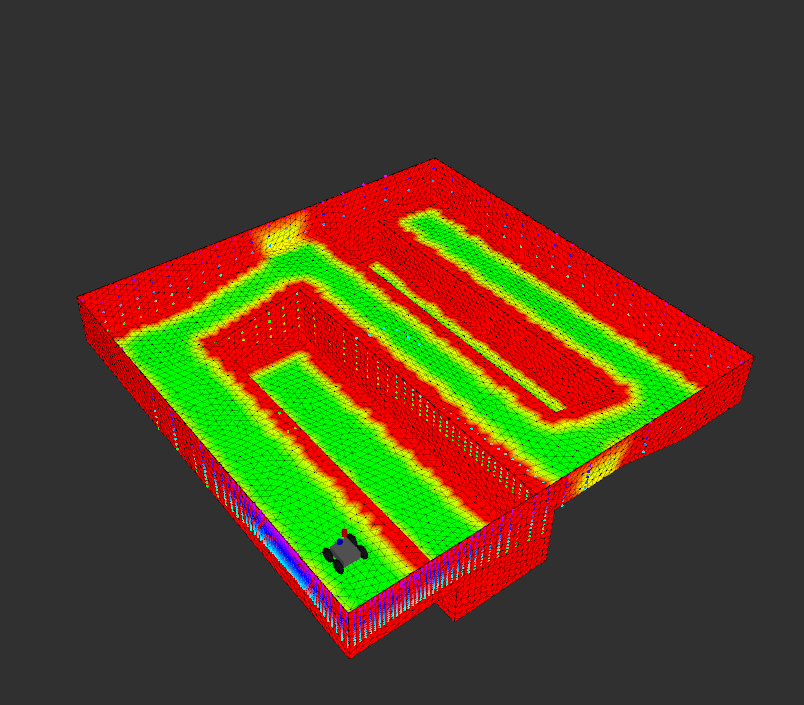
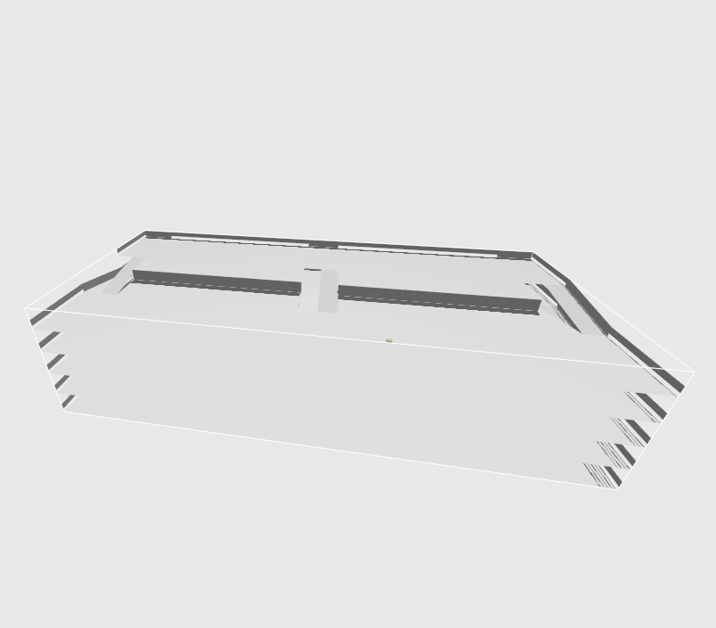
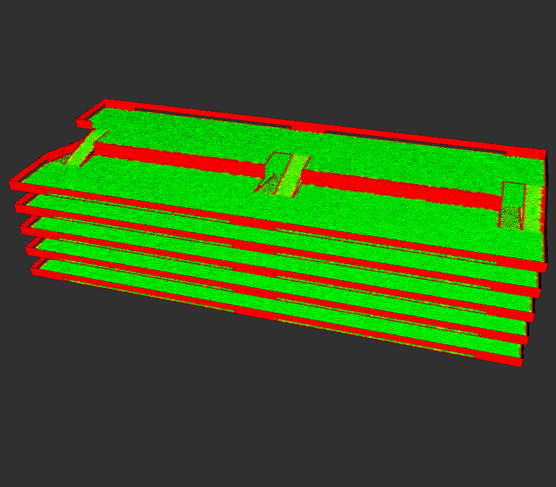

Mesh Navigation (Quick-Start)
This tutorial aims to help quickly giving a feeling how to setup mesh_navigation properly and how to fine-tune several parameters.
Important
You need mesh_navigation_tutorials installed before continuing.
Start the first example by calling:
ros2 launch mesh_navigation_tutorials mesh_navigation_tutorials_launch.py world_name:=floor_is_lava
You can change floor_is_lava by any world name that is available with this repository (see all by calling launch file with --show-args). Those are:
| Name | World | Default Map | Description |
|---|---|---|---|
| tray |  |  | This world is a rectangular area with a wall around the perimeter. |
| floor_is_lava |  |  | This world contains a square area with with two pits and a connecting section at a slightly higher elevation. |
| parking_garage |  |  | This world represents a parking garage with multiple floors connected by ramps. |
Info
See Virtual Worlds for more information about those and more realistic maps that are available within the tutorials.
An RViz window opens showing a mesh map which is used by MeshNav for path planning and control. In order to make the robot move, find the "Mesh Goal" tool at the top. With it, you can click on any part of the mesh. Click and hold to set a goal pose.
Parameters
Note
Note: Open this to access the most recent config file.
A complete parameter file of mesh_navigation can look like this:
Parameter File
move_base_flex:
ros__parameters:
global_frame: 'map'
robot_frame: 'base_footprint'
odom_topic: 'odom'
use_sim_time: true
force_stop_at_goal: true
force_stop_on_cancel: true
planners: ['mesh_planner']
mesh_planner:
type: 'cvp_mesh_planner/CVPMeshPlanner'
cost_limit: 0.99 # Vertices with costs higher than this value will be avoided. Has to be set *below* the inflation layer inscribed value to avoid obstacles in planning
publish_vector_field: true
planner_patience: 10.0
planner_max_retries: 2
project_path_onto_mesh: false
controllers: ['mesh_controller']
mesh_controller:
type: 'mesh_controller/MeshController'
ang_vel_factor: 7.0
lin_vel_factor: 1.0
controller_patience: 2.0
controller_max_retries: 4
dist_tolerance: 0.2
angle_tolerance: 0.8
cmd_vel_ignored_tolerance: 10.0
mesh_map:
# input
# In this examples, `mesh_file` is set dynamically from the launch file.
# you can also set it statically:
# mesh_file: '.../parking_garage.ply'
mesh_part: '/'
# storage
# mesh_working_file: 'parking_garage.h5'
mesh_working_part: 'mesh'
# half-edge-mesh implementation
# pmp (default), lvr
hem: pmp
# these are the layers the MeshMap will load into the layer graph
layers:
- border
- height_diff
- roughness
- static_combination
- static_inflation
- obstacle
- obstacle_inflation
- final
# this sets the layer used for planning and control
default_layer: 'final'
height_diff:
type: 'mesh_layers/HeightDiffLayer'
combination_weight: 1.0
threshold: 0.2
border:
type: 'mesh_layers/BorderLayer'
combination_weight: 1.0
border_cost: 1.0
threshold: 0.2
roughness:
type: 'mesh_layers/RoughnessLayer'
combination_weight: 1.0
threshold: 0.8
static_combination:
# This layer combines the three input layers by linearly combining vertex costs:
# -> vertex_cost = layer1.combination_weight * layer1.vertex_cost + layer2.combination_weight * layer2.vertex_cost + ...
# The input layers' lethal vertices are accumulated in a combined set
type: 'mesh_layers/AvgCombinationLayer'
# The `inputs` parameter determines which layers are processed by this layer.
# If a layer does not process inputs, this parameter can be omitted
inputs: ['height_diff', 'border', 'roughness']
static_inflation:
type: 'mesh_layers/InflationLayer'
inputs: ['static_combination']
combination_weight: 1.0
inflation_radius: 1.5 # outer ring
inscribed_radius: 0.4 # inner ring
lethal_value: .inf
inscribed_value: 1.0
repulsive_field: false
cost_scaling_factor: 2.0
obstacle:
type: 'mesh_layers/ObstacleLayer'
combination_weight: 1.0
robot_height: 0.75
max_obstacle_dist: 10.0
topic: 'obstacle_points'
obstacle_inflation:
type: 'mesh_layers/InflationLayer'
inputs: ['obstacle']
combination_weight: 1.0
inflation_radius: 1.5 # outer ring
inscribed_radius: 0.4 # inner ring
lethal_value: .inf
inscribed_value: 1.0
repulsive_field: false
cost_scaling_factor: 2.0
final:
type: 'mesh_layers/MaxCombinationLayer'
inputs: ['static_inflation', 'obstacle_inflation']
# An edge cost equals the total costs that are collected along a
# triangle's edge by linearly interpolating the combined vertex costs
# This factor defines the factor that is used for the final edge weight
# -> edge_weight = edge_length + edge_cost_factor * edge_cost
# This edge_weight is then passed to the global planner to search for
# the best path
# Note: Set this to 0.0 if you need the shortest path
edge_cost_factor: 5.0
# debug function: enable this, for publishing text markers with edge costs
publish_edge_weights_text: false
# debug/development function: enable this to log the update times of changing layers to a csv file
enable_layer_timer: false
The following sections give a brief explanation what those parameter are good for.
General Parameters (MBF)
The following parameters are related to Move Base Flex. If you miss some information here, we refer to MBFs documentation.
global_frame: 'map'
robot_frame: 'base_footprint'
odom_topic: 'odom'
force_stop_at_goal: true
force_stop_on_cancel: true
controller_patience: 2.0
controller_max_retries: 4
dist_tolerance: 0.2
angle_tolerance: 0.8
cmd_vel_ignored_tolerance: 10.0
planner_patience: 10.0
planner_max_retries: 2
The parameter global_frame sets the frame where the map is located in.
The parameter robot_frame sets the frame of the robot base.
A localization estimates the connection between the global_frame and the robot_frame, so make sure you have one running.
You can check this by visualizing the tf-tree and searching for a path from the global_frame to the robot_frame.
odom_topic points to a topic where an odometry estimation of your robot is published to.
The published messages have to be of type nav_msgs/Odometry.
This odom_topic may provide motion information in higher frequency and is internally used to extrapolate from the last map localization.
This becomes especially relevant if you have a low frequency localization in your map as it ensures short state estimation cycles for the controller.
In reality, state estimation errors are propagated to the controller, as it relies on it. In the worst case, the localization relative to the map is completely lost, which causes the whole navigation to fail. For the tutorials, however, the localization is perfect by default as it is provided by the Gazebo simulation. This helps to develop planning or controlling strategies since we don't inherit errors from the localization system. This means, if our newly developed planner or controller fails, we can be sure it's our fault. However, in order to check whether our newly developed planner or controller really works reliably, we must also take possible localization errors into account. Therefore, we are working on including localization strategies directly in the tutorials as well. Some of them are described here: Link.
The other parameters are related to Move Base Flex. If you need more information about them, we refer to MBFs documentation.
Mesh Planners and Controllers
The following parameters are describing what planners and controllers are loaded and how they are parameterized.
# planner
planners: ['mesh_planner']
mesh_planner:
type: 'cvp_mesh_planner/CVPMeshPlanner'
cost_limit: 0.8
publish_vector_field: true
# controller
controllers: ['mesh_controller']
mesh_controller:
type: 'mesh_controller/MeshController'
ang_vel_factor: 7.0
lin_vel_factor: 1.0
In general, they are described in the exact same way you would do it for the 2d costmap navigation implementation of Move Base Flex - which is currently not existing for ROS 2, however you can orient at ROS 1 examples. The only difference for mesh navigation is that we are only allowed to load planners and controllers that can handle to move the robot over a triangle mesh's surface.
The planners list contains the planners names, the controllers list contains the controllers names.
All names in planners and controllers point to certain key-value pairs in the parameter file.
In this example one mesh planner of type cvp_mesh_planner/CVPMeshPlanner is loaded and one controller of type mesh_controller/MeshController is used.
One core feature that of MBF is to let the user switch different planners and controllers at runtime. For example, we might want to switch the robot's driving mode from a risky behavior to a more careful behavior for certain situations. This can be simply achieved by renaming the existing controller and giving them different parameters as follows:
# planner
planners: ['mesh_planner']
mesh_planner:
type: 'cvp_mesh_planner/CVPMeshPlanner'
cost_limit: 0.8
publish_vector_field: true
# controller
controllers: ['mesh_controller_careful', 'mesh_controller_risky']
mesh_controller_careful:
type: 'mesh_controller/MeshController'
ang_vel_factor: 7.0
lin_vel_factor: 1.0
mesh_controller_risky:
type: 'mesh_controller/MeshController'
ang_vel_factor: 20.0
lin_vel_factor: 10.0
You can then use e.g. a behavior tree to select a pre-parameterized controller, depending on the situation.
Mesh Map
The following parameters are used to describe general map information, the way the cost-layers are computed, and which cost-layers are considered for navigation.
mesh_map:
mesh_file: 'path/to/my_layered_mesh_map.ply'
mesh_part: '/' # reference to mesh
# list of available layers
layers:
- border
- height_diff
- roughness
- static_combination
- static_inflation
- obstacle
- obstacle_inflation
- final
[...]
Dynamic Reconfigure
Most of the parameters can be changed at run time to conveniently fine-tune certain cost-layer's parameters. Call
ros2 run rqt_reconfigure rqt_reconfigure
An rqt window will open in which you can change parameters of different parts of the mesh navigation.